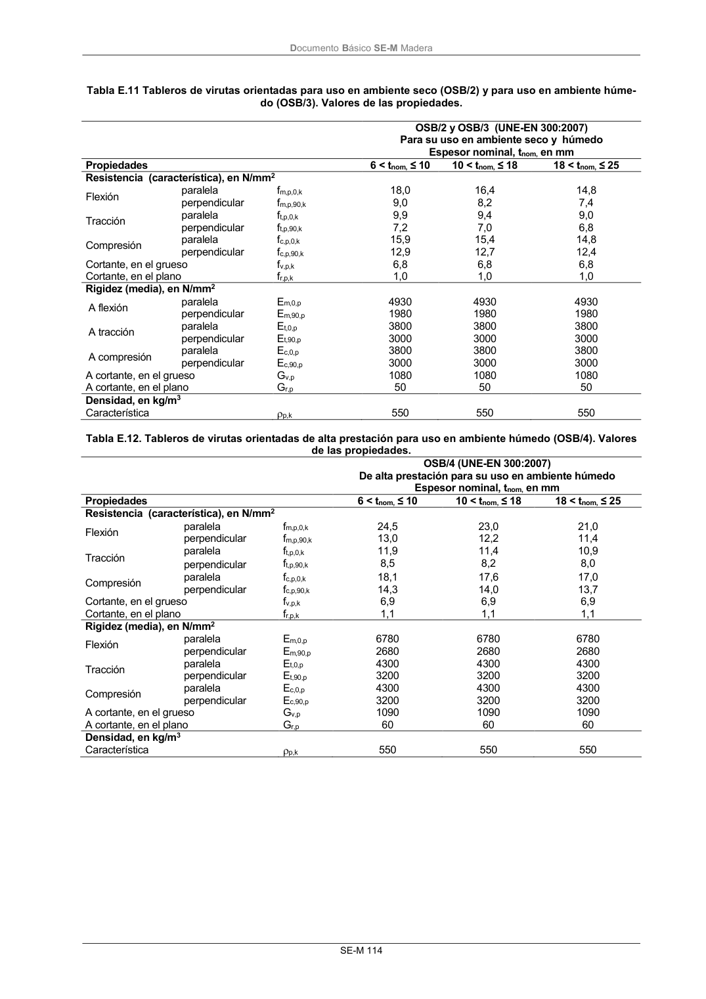

DB-SE-M · Fragmento de PDF p119 · versión 2019-12-20 · capa oficial
Formatos: JSON compacto · Markdown · PDF fuente
Ámbito del documento · texto del ámbito · documento y tablas
ID técnico a0205 · PDF pág. 119-120 · jerarquía no validada por persona · no es capítulo: sin_linea_de_encabezado · padre: raíz · literal original en el contenido: «E.3.4 Tableros virutas orientadas E.3.4.1 Valores de las propiedades de resistencia, rigidez y densidad de los tableros contracha-»
E.3.4 Tableros virutas orientadas E.3.4.1 Valores de las propiedades de resistencia, rigidez y densidad de los tableros contracha- E.3.4.1 Valores de las propiedades de resistencia, rigidez y densidad de los tableros contracha- pados 1 En las tablas E.11 y E.12 se indican los valores de las propiedades de resistencia, rigidez y densidad asociadas a cada tipo de tablero de tablero de virutas orientadas (OSB). DocumentoBásico SE-M Madera SE-M 114 Tabla E.11 Tableros de virutas orientadas para uso en ambiente seco (OSB/2) y para uso en ambiente húme- do (OSB/3). Valores de las propiedades. OSB/2 y OSB/3(UNE-EN 300:2007) Para su uso en ambiente seco y húmedo Espesor nominal, tnom, en mm Propiedades

PDF fuente redistribuible: copia fiel enlazada en esta página (SHA256 verificado).